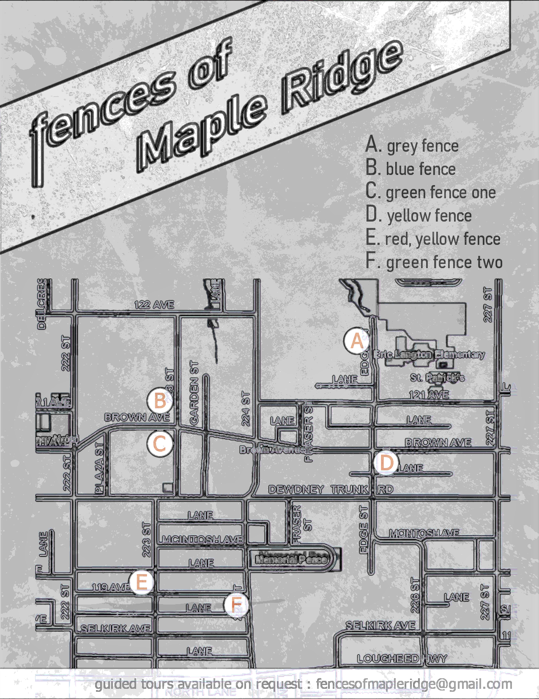

PAST PROJECTS ::
Douglas College Building A/B Renewal [Douglas College, Coquitlam, BC]
About the Project: The project team was tasked with updating the exterior of Building A/B,
located at the Douglas College Coquitlam campus, to reduce the buildings
overall energy use while preparing the facade against increased frequencies
of high temperatures and destructive weather events due to climate change.
click to see an article about the project
Role: Managed the schematic design process by facilitating + coordinating stakeholder feedback; completed detailed construction documents,
specifications for tender and permits; assisted in energy use calculations, assembly detailing to meet the projects climate resiliency
and energy use targets.
Rapid Housing Initiative [City of Vancouver]
About the Project: In an effort to confront the ongoing housing and homelessness crisis, the City of
Vancouver partnered with the Federal Government and several agencies
on a large scale investment in housing for the city. This
initiative included the purchase and remodelling of existing hotels, as
well as the building of new modular units for at-risk or homeless individuals.
more on the Rapid Housing Initiative here
Role: Coordinated consultant team selection and pre-construction works for two (2)
existing hotel locations; including the development of
detailled drawings for preliminary costing, stakeholder input, and communications
with the City of Vancouver Building and Development departments.
SONDER [RED ENGINE COFFEE]
About the Project: Sonder was originally envisioned by Red Engine Coffee Roasters in Lethbridge, AB as a permanent
storefront solution for selling their coffee outside of online orders and the local farmers market. Sonder has since
grown into a local institution, continually expanding and redefining what quality means for a cafe experience.
click here see what Sonder is up to now!
Role: Provided initial design iterations and recommended finishes, detailing to meet the project
budget and timelines. Developed and submitted permit drawings to meet the requirements of the city of
Lethbridge's Building Department.
Fences of Maple Ridge [CLLCTV]
About the Project: Fences of Maple Ridge is a personal project intended on improving discourse
around under-utilized, defensively designed, and/or disruptive landscapes through data visualization.

Role: produced satirical maps of the downtown area (example shown) that indicated the current
layout of construction fences in the downtown core. the maps where distributed as pamphlets at
local business and shared with City of Maple Ridge staff. Additionally, letters were drafted and sent,
recommending amenity contributions or temporary-use permits as viable offsets to improve civic
space access within the community.